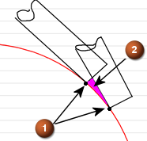
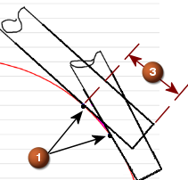
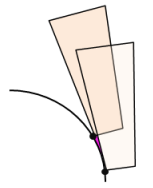
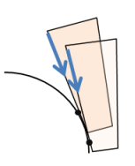

Contour Profile Ring Height
What is it?
Variable-axis contour profile operations cut with the side of the tool. The new Ring Height option lets you shift the tool along its axis to reduce scallops between cuts. The contact point on the part is not affected.
You can equalize tool wear with the Variable option. Specify a top and a bottom distance to control how far the tool can move.
NX applies the axial shift to all cutting motions as well as to extensions and across void motions. If the axial shift could gouge the part, NX lifts the tool along its axis or silhouette to prevent the gouge.
A positive value pushes the tool down. Negative values are not supported.
|
1 = contact points, 2 = scallop, 3 = Ring Height, Distance value |
|
|
 |
 |
|
Ring Height = Constant Distance = 0 |
Ring Height = Constant Distance = 12 |
Tapered tools are supported.
|
 |
 |
|
Ring Height = Constant Distance = 0 |
Ring Height = Constant Distance = 12 |
Where do I find it?
|
Application |
Manufacturing |
|
Prerequisite |
Contour Profile operation |
|
Location in dialog box |
Contour Profile operation dialog box→Drive Method group→Edit |